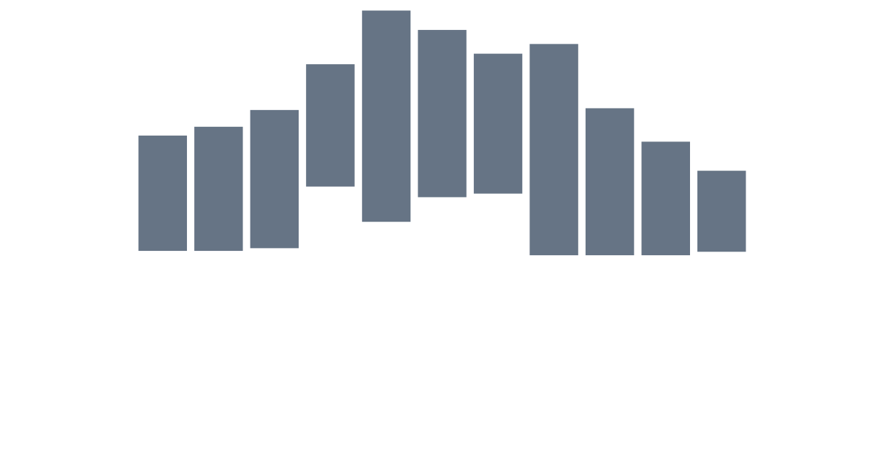
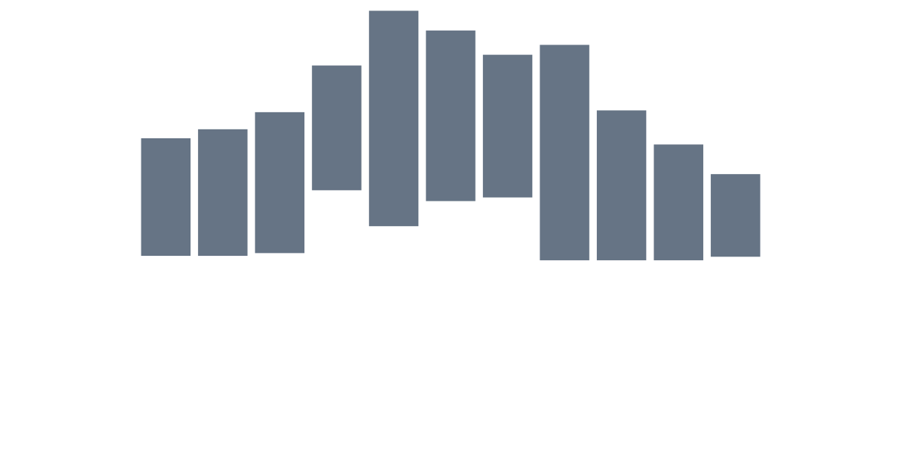

How often is each justice in the majority?
Fraction of cases in which the justice voted with the majority, among cases in which the justice participated.
 Kavanaugh
Kavanaugh Roberts
Roberts Barrett
Barrett Gorsuch
Gorsuch Jackson
Jackson Alito
Alito Thomas
Thomas Kagan
Kagan Ginsburg
Ginsburg Breyer
Breyer Sotomayor
Sotomayor 


Photo: Joe Ravi, CC-BY-SA 3.0
scotusstats.com is a tool for exploring statistics related to cases heard by the Supreme Court of the United States.
All charts can be customized by changing the filter settings.
The charts are based on data from the scdb database, from the oyez.org project, and from the Supreme Court's website.
This website is maintained by Dominik Peters as a side project. Feedback and bug reports are welcome. The code is open source and available on GitHub. This website also hosts a podcast feed of audio recordings of Supreme Court oral arguments for convenient listening, and a video channel of Supreme Court oral arguments with synchronized transcripts.
Fraction of cases in which the justice voted with the majority, among cases in which the justice participated.
KavanaughRobertsBarrettGorsuchJacksonAlitoThomasKaganGinsburgBreyerSotomayorFraction of cases in which the justice voted with the majority, among cases in which the justice participated.